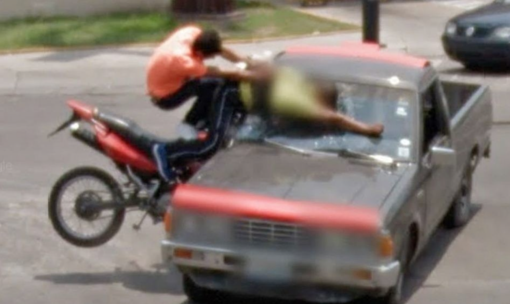
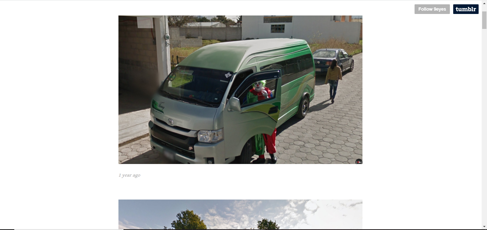

The Concept

Starting from 2008, Jon Rafman began collecting images from Google Street View, which at the time was about a year old.

Google Street View takes images without concern for privacy or ethics, so these images are neutral, unbiased. This leads to an untapped treasure trove of images.
1/9